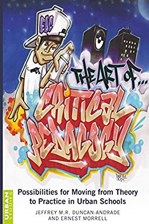
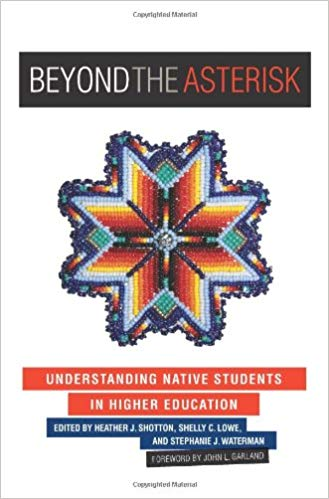
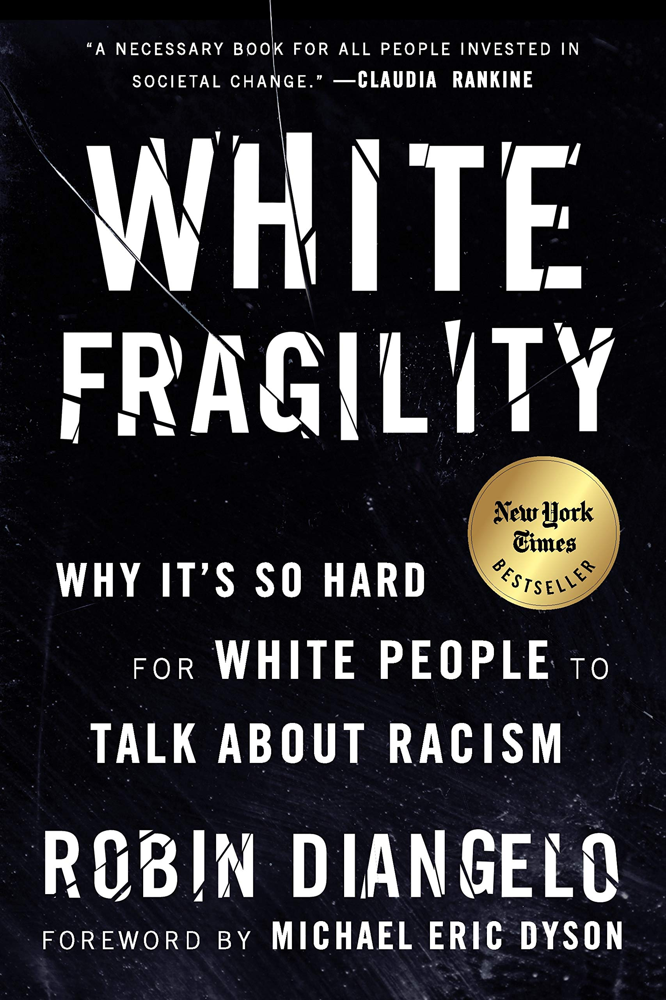
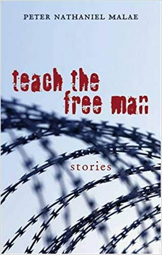
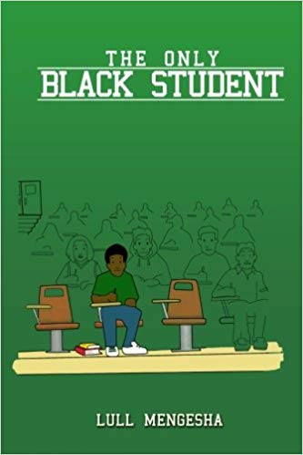
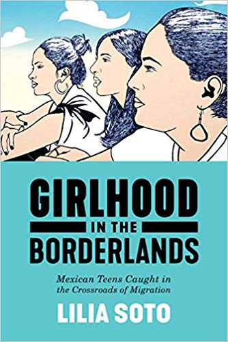

 This book furthers the discussion concerning critical pedagogy and its practical applications for urban contexts. It addresses two looming yet, under-explored questions that have emerged with the ascendancy of critical pedagogy in the educational discourse: 1) What does critical pedagogy look like in work with urban youth? and 2) How can a systematic investigation of critical work enacted in urban contexts simultaneously draw upon and push the core tenets of critical pedagogy.
 While the success of higher education and student affairs is predicated on understanding the students we serve, the reality is, where the Native American population is concerned, that this knowledge is generally lacking. This lack may be attributed to this population's invisibility within the academy - it is often excluded from institutional data and reporting, and frequently noted as not statistically significant - and its relegation to what is referred to as the "American Indian research asterisk." The purpose of this book is to move beyond the asterisk in an effort to better understand Native students, challenge the status quo, and provide an informed base for leaders in student and academic affairs, and administrators concerned with the success of students on their campuses. The authors of this book share their understanding of Native epistemologies, culture, and social structures, offering student affairs professionals and institutions a richer array of options, resources, and culturally-relevant and inclusive models to better serve this population.
 In this “vital, necessary, and beautiful book” (Michael Eric Dyson), antiracist educator Robin DiAngelo deftly illuminates the phenomenon of white fragility and “allows us to understand racism as a practice not restricted to ‘bad people’ (Claudia Rankine). Referring to the defensive moves that white people make when challenged racially, white fragility is characterized by emotions such as anger, fear, and guilt, and by behaviors including argumentation and silence. These behaviors, in turn, function to reinstate white racial equilibrium and prevent any meaningful cross-racial dialogue. In this in-depth exploration, DiAngelo examines how white fragility develops, how it protects racial inequality, and what we can do to engage more constructively.

The twelve stories in Teach the Free Man mark the impressive debut of Peter Nathaniel Malae. The subject of incarceration thematically links the stories, yet their range extends beyond the prison’s barbed wire and iron bars. Avoiding sensationalism, Malae exposes the heart and soul in those dark, seemingly inaccessible corridors of the human experience.
The stories, often raw and startlingly honest, are distinguished by the colloquial voices of California’s prison inmates, who, despite their physical and cultural isolation, confront dilemmas with which we can all identify: the choice to show courage against peer pressure; the search for individual rights within a bureaucracy; and the desperate desire for honor in the face of great sacrifice. These stories present polished and poetic examples of finding something redemptive in the least among us.
 The Only Black Student is a book that evolved progressively from casual group and one on one discussions into written form during the latter years of Lull's undergraduate experience. On campus, Lull worked as a student ambassador for the Office of Minority Affairs. Additionally, he provided guidance to college-bound high school students who feared that they would not succeed socially and academically at a Predominantly White Institution. Many had only interacted with people of similar economic and ethnic backgrounds before entering a PWI. Compiling input from his mentors, mentees, and peers over the course of three years, he completed and published his first edition of The Only Black Student. Lull never considered himself a writer, but was driven by the desire to inscribe the wisdom to others that he wished someone had shared with him when his academic journey began.

This book examines the lived experiences of Mexican teenage girls raised in transnational families and the varied ways they make meaning of their lives. Under the Bracero Program and similar recruitment programs, Mexican men have for decades been recruited for temporary work in the U.S., leaving their families for long periods of time to labor in the fields, factories, and service industry before returning home again. While the conditions for these adults who cross the border for work has been extensively documented, very little attention has been paid to the lives of those left behind. Over a six-year period, Lilia Soto interviewed more than sixty teenage girls in Napa, California and Zinapécuaro, Michoacán to reveal the ruptures and continuities felt for the girls surrounded by the movement of families, ideas, and social practices across borders.
As they develop their subjective selves, these Mexican teens find commonality in their fathers’ absence and the historical, structural, and economic conditions that led to their movement. Tied to the ways U.S. immigration policies dictate the migrant experiences of fathers and the traditional structure of their families, many girls develop a sense of time-lag, where they struggle to plan for a present or a future. In Girlhood in the Borderlands, Soto highlights the “structure of feeling” that girls from Zinapécuaro and Napa share, offering insight into the affective consequences of growing up at these social and geographic intersections.